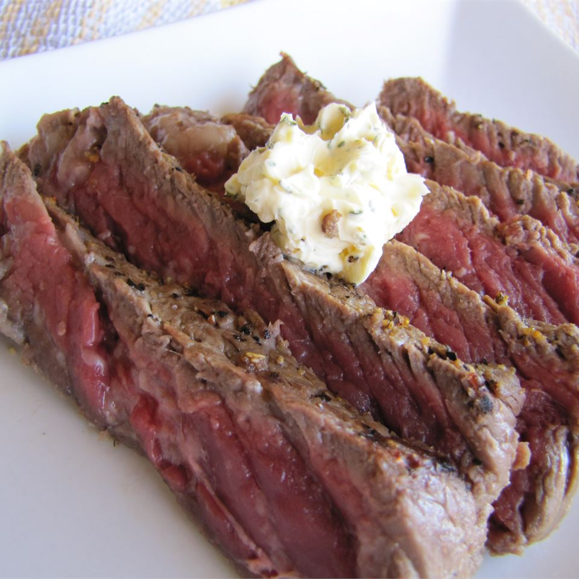

Beer Steak

Flavorful Slices of Beer Steak
This simple, easy to make grilled steak is sure to be a hit. It needs only 10 minutes of prep time, 10 minutes of cooking time, requiring a marination time of at least 1 hour. erves 4.
Ingredients
- 4 (1/2 pound) rib-eye steaks, or steak of choice
- 2 tablespoons sea salt
- 2 tablespoons lemon pepper
- 2 (12 fluid ounce) cans or bottles beer of choice
Steps
- Place steaks in a large, shallow container with a lid.
- Season each side of steak with salt and lemon pepper.
- Gently pour beer over steaks (making sure the seasoning doesn't wash off).
- Cover, and refrigerate for 1 to 2 hours.
- Preheat an outdoor grill for high heat and lightly oil the grate.
- Place steaks on preheated grill; discard beer marinade.
- Cook for 5 minutes per side, or to desired doneness.